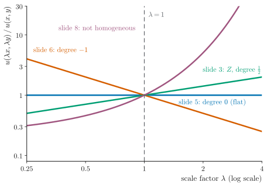
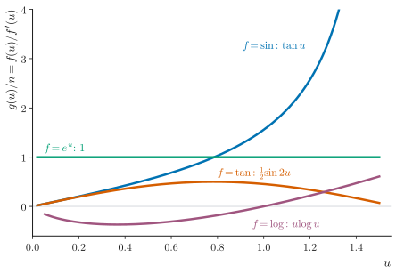

UE26MA141A Engineering Mathematics – I · Unit 1 · Partial Differentiation
Problems on Euler's Theorem
Complete study pack for class 006: testing homogeneity with the scaling test, verifying Euler's theorem, first- and second-order problems, and the extension when f(u) is homogeneous
Compiled from the PESU class 006 slide deck, its two AV-summary transcripts, the Unit 1 class-work sheet and past ESA papers. Generated 14 October 2026.
·How to use this pack
Topic 1 tests whether a function is homogeneous; topic 2 verifies Euler's theorem by differentiating; topics 3 and 4 are the two kinds of exam problem: u itself homogeneous, or some f(u) homogeneous. The theory (definitions, proofs, applications) is in the class 005 pack “Homogeneous Functions and Euler's Theorem”; the statements are repeated here only so that each problem can be solved from this pack alone. Every topic has the same parts: overview, key terms, formulas, figures, flowcharts, important points, worked examples, past-paper questions and a recap. IDs are shared with the separate documents: E = formula, G = graph, F = flowchart, W = worked example. Each ID is numbered by topic, so E4.2 is the second formula of topic 4.
ESA ★★★Asked repeatedly in past ESA papersESA ★★Asked in past ESA papers or computed in class-work problemsESA ★Conceptual: taught in class, not examined so faradded for clarityStandard context that is not in the class materialtranscript onlySaid in the lecture but not on any slidevideo onlySeen only in a frame of the class videonot on current slidesFrom older material or past papers, not this year's slidesS006·12Deck 006, slide 12 (rendered .pptx)T006a 00:05:18Transcript 006 part I (slides 3–4, 9.1 min)T006b 00:08:20Transcript 006 part II (slides 5–17, 12.9 min)CW U1 P20Unit 1 class-work problem 20ESA Jan-24 s3 1cPast paper: Jan 2024, set 3, question 1.c
1Testing homogeneity: the scaling test
Before Euler's theorem can be used, you must show the function is homogeneous and find its degree. Class 006 does this with the scaling test: replace x by λx and y by λy; if the result is λnu(x,y), then u is homogeneous of degree n. The degree can be positive, negative or zero; if no power of λ factors out, the function is not homogeneous.
Key terms and definitions
Homogeneous function (scaling form).u(x,y) is homogeneous of degree n if u(λx,λy)=λnu(x,y). Here n can be positive, negative or even zero. S006·5 · T006b 00:00:52 · T006b 00:01:11
Not homogeneous.u is not homogeneous when u(λx,λy)=λnu(x,y) for every n: no single power of λ can be taken out. S006·8 · T006b 00:04:59
Formulas
E1.1 · Scaling testESA ★★
u(λx,λy)=λnu(x,y)⟹uhomogeneous of degree n
givesWhether u is homogeneous, and its degree.appliesAny function; with three variables scale z too.noteIf no power λn factors out, u is not homogeneous.
S006·5 · T006b 00:00:52
E1.2 · Degree of a quotientESA ★★
degQP=degP−degQ
givesThe degree without writing out λ.appliesP, Q homogeneous.notex8+y8+z8x+2y+3z: 1−4=−3.
added for clarityS006·4 · T006a 00:06:10
Graphs and diagrams

Figure G1.1. The scaling test on log-log axes. ESA ★★
added for clarityS006·3 · S006·5 · S006·6 · S006·8
How to read it. Each curve is u(λx,λy)/u(x,y) for a deck function, plotted against λ on log-log axes. A homogeneous function gives λn: a straight line of slope n through (1,1). Slide 006·5 is flat (degree 0), slide 006·6 falls with slope −1, Z from slide 006·3 rises with slope 21. Slide 006·8's function curves away: it is not homogeneous. Base point (1,2); (2,1) for slide 006·6, where sin−1(y/x) needs y≤x.
Flowcharts
given
u=(x2+y2)2x4+2x2y2+y4
1
Replace x→λx, y→λy
u(λx,λy)=((λx)2+(λy)2)2(λx)4+2(λx)2(λy)2+(λy)4
2
Take out powers of λ
λ4(…)λ4(…)=λ0u(x,y)
result
Read the degree
n=0; no power factors out ⇒ not homogeneous
Remark. Use the test on u (topic 3) or on f(u) (topic 4); the steps are the same.
Figure F1.1. The scaling test ESA ★★
S006·5 · T006b 00:01:41 · T006b 00:02:37
Important points and why
Write u(λx,λy), take the highest power of λ out of the numerator and the denominator, and cancel. ESA ★★S006·5 · T006b 00:02:17
A λ inside a ratio cancels: sin−1λxλy=sin−1xy, so functions of y/x add degree 0. ESA ★★S006·6 · T006b 00:03:34
eλx cannot be written as λnex, so exponentials of x or y alone break homogeneity (slide 006·8). ESA ★★S006·8 · T006b 00:04:40
Simplify first when you can: slide 006·5 is (x2+y2)2(x2+y2)2=1 and slide 006·7 is (x+y)3xy(x+y)=(x+y)2xy; both have degree 0. ESA ★added for clarityS006·5 · S006·7
Why does slide 006·8 fail the test?
u(λx,λy)=λ(x−y)eλx−eλy. The denominator gives λ−1, but eλx−eλy is not a power of λ times ex−ey. Figure G1.1 shows the ratio is not a straight line on log-log axes.
checkThe numerator is (x2+y2)2, so u≡1: a constant, degree 0.
S006·5 · T006b 00:00:24
W1.2 · Degree −1 (slide 006·6)ESA ★★
givenu=x2+y2sin−1(y/x).
step 1sin−1λxλy=sin−1xy: the λ cancels.
step 2(λx)2+(λy)2=λx2+y2.
step 3u(λx,λy)=λ−1u(x,y).
answerHomogeneous of degree −1
checksympy: u(λx,λy)/u=1/λ.
S006·6 · T006b 00:03:02
W1.3 · Degree 0 (slide 006·7)ESA ★
givenu=(x+y)3x2y+xy2.
step 1u(λx,λy)=λ3(x+y)3λ3(x2y+xy2)=λ0u.
answerHomogeneous of degree 0
checku=(x+y)2xy, a function of y/x only.
S006·7 · T006b 00:04:06
W1.4 · Not homogeneous (slide 006·8)ESA ★★
givenu=x−yex−ey.
step 1u(λx,λy)=λ(x−y)eλx−eλy.
step 2No factor λn can be taken out of eλx−eλy.
answeru is not homogeneous
checkFigure G1.1: the ratio curves on log-log axes.
S006·8 · T006b 00:04:40
short-note recap
Scaling test: u(λx,λy)=λnu(x,y) means degree n (positive, negative or zero). Slide examples: (x2+y2)2x4+2x2y2+y4 degree 0; x2+y2sin−1(y/x) degree −1; (x+y)3x2y+xy2 degree 0; x−yex−ey not homogeneous.
2Verifying Euler's theorem directly
To verify the theorem, compute both sides separately: find the degree n, then differentiate, form xux+yuy and simplify until it equals nu. Slide 006·3 does this for Z=x+yx+y with the quotient rule. It is long; in every other problem the theorem is applied, not verified.
Key terms and definitions
“Euler's theorem: if u=f(x,y) is a homogeneous function of degree n, then x∂x∂u+y∂y∂u=nu.” S006·10 · T006a 00:00:00
Formulas
E2.1 · Euler's theoremESA ★★★
x∂x∂u+y∂y∂u=nu
givesThe first-order Euler sum.appliesu homogeneous of degree n; add zuz for three variables.noteTo verify, compute the left side by differentiating and show it equals nu.
S006·3 · S006·10 · T006a 00:00:00
Important points and why
Verification is a check of the theorem, not a method: the lecture spends four minutes on slide 006·3; applying the theorem takes one line. ESA ★T006a 00:04:57 · T006a 00:08:41
In slide 006·3, group the terms with the common denominator (x+y)2 and cancel one factor of x+y. ESA ★T006a 00:02:59 · T006a 00:03:17
Exam trap. Slide 006·3 says “verify for cos−1(…)” but verifies for Z=cosu. For u itself, xux+yuy=21−sinucosu=−21cotu, not 21u. added for clarityS006·3
Worked examples
W2.1 · Verify Euler's theorem (slide 006·3)ESA ★★
givenu=cos−1x+yx+y; verify Euler's theorem for Z=cosu=x+yx+y.
step 1Z=x(1+y/x)x(1+y/x)=xf(xy): degree 21, so Euler predicts xZx+yZy=21Z.
step 2Quotient rule: Zx=(x+y)2(x+y)−2xx+y, so xZx=2(x+y)2xx+2xy−yx.
step 3By symmetry yZy=2(x+y)2yy+2yx−xy.
step 4Add: numerator xx+xy+yx+yy=(x+y)(x+y), so the sum is 2(x+y)x+y=21Z.
answerxZx+yZy=21Z: verified
checksympy: residual 0. For u itself: xux+yuy=−21cotu (added for clarity).
S006·3 · T006a 00:00:18 · T006a 00:04:11
short-note recap
To verify: find n, differentiate, form xux+yuy, simplify to nu. For Z=x+yx+y (n=21): xZx+yZy=2(x+y)2(x+y)(x+y)=21Z.
3When u itself is homogeneous: first and second order
If u is homogeneous of degree n, write the answers down: xux+yuy=nu and x2uxx+2xyuxy+y2uyy=n(n−1)u; their sum is n2u. For a sum of parts with different degrees, apply the result to each part with its own degree. Most ESA questions on Euler's theorem are of this type.
Key terms and definitions
“By Euler's theorem for a homogeneous function of degree n: x2uxx+2xyuxy+y2uyy=n(n−1)u.” S006·11
givesThe combination asked in ESA Jan 2024 sets 3 and 4.appliesu homogeneous of degree n; for u1+u2 use n12u1+n22u2.noten(n−1)+n=n2.
added for clarityESA Jan-24 s3 1c · ESA Jan-24 s4 1d · CW U1 P23
Flowcharts
Scaling test on u: is u homogeneous?
Yes, degree n
First order; second order
nu; n(n−1)u
Yes, both orders asked together
Add the two
n2u
Sum of parts with different degrees
Each part with its own n
n12u1+n22u2
No: u=sin−1,tan−1,log,e(…)
Undo the outer function, test f(u)
g=nf/f′; g(g′−1)
Asked to verify
Differentiate and simplify to nu
topic 2
Remark. Exam questions say “using Euler's theorem”: always state the homogeneity and the degree first.
Figure F3.1. Which Euler formula? ESA ★★★
T006b 00:06:11 · T006b 00:09:08 · S006·13
Important points and why
First prove that u is homogeneous and find n; then write both answers without differentiating. ESA ★★★T006b 00:06:11 · T006b 00:06:45
Give the answer in terms of x and y too: −u=−x2+y2x−y and 2u=x2+y22(x−y). ESA ★★S006·10 · S006·11
For a sum of parts with different degrees, apply the corollary part by part: n1(n1−1)u1+n2(n2−1)u2. ESA ★★★added for clarityESA Jan-24 s3 1c · CW U1 P22
Exam trap.n=−1 gives n(n−1)=(−1)(−2)=+2, not −2: the second-order answer on slide 006·11 is +2u. added for clarityS006·11
Worked examples
W3.1 · Degree −1, both orders (slides 006·9–11)ESA ★★★
givenu=x2+y2x−y; find (i) xux+yuy, (ii) x2uxx+2xyuxy+y2uyy.
W3.7 · Degrees 3 and 4, value at (1, 1) (ESA)ESA ★★★
givenu=x3sin−1(y/x)+x4tan−1(y/x); find x2uxx+2xyuxy+y2uyy+xux+yuy at (1,1).
step 19u1+16u2 with u1=x3sin−1(y/x), u2=x4tan−1(y/x).
step 2At (1,1): u1=2π, u2=4π.
step 329π+4π.
answer217π
checksympy: the expression equals 9u1+16u2 identically.
ESA Jan-24 s3 1c
W3.8 · A function of ratios only (ESA)ESA ★★
givenu=f(yx,zy,xz); find xux+yuy+zuz.
step 1Scaling x,y,z by λ leaves every ratio unchanged: degree 0.
step 2Euler in three variables: 0⋅u.
answerxux+yuy+zuz=0
checkSame as the chain-rule method (sympy).
ESA Jan-24 s1 1d
Past-paper questions
ESA Jul 20236 marksUE22MA141A Q1.a · solved in W3.4
If u(x,y)=x3y2sin−1(xy), prove that (i) xux+yuy=5u, (ii) x2uxx+2xyuxy+y2uyy=20u.
ESA Jan 20246 marksUE23MA141A set 3, Q1.c · solved in W3.7
If u=x3sin−1(xy)+x4tan−1(xy), find x2uxx+2xyuxy+y2uyy+xux+yuy at x=1, y=1 by using Euler's theorem and its extension.
ESA Jan 20246 marksUE23MA141A set 4, Q1.d · solved in W3.6
If u=x3sin−1(xy)+y−3tan−1(yx), evaluate x2uxx+2xyuxy+y2uyy+xux+yuy by using Euler's theorem and its extension.
ESA Jan 20245 marksUE23MA141A set 1, Q1.d · solved in W3.8
If u=f(yx,zy,xz), find xux+yuy+zuz (degree 0; also solvable by the chain rule).
short-note recap
u homogeneous of degree n: xux+yuy=nu, x2uxx+2xyuxy+y2uyy=n(n−1)u, sum n2u. x2+y2x−y: −u, 2u. ESA: 5u & 20u; 9u; 17π/2; ratios only give 0.
4When f(u) is homogeneous: the extension
For u=sin−1(…), tan−1(…), log(…) or e(…), u is not homogeneous, but undoing the outer function gives a homogeneous f(u): sinu, tanu, eu or logu. If f(u) has degree n, then xux+yuy=g(u)=nf(u)/f′(u) and the second-order sum is g(u)[g′(u)−1]. Class 006 works four such problems; ESA May and June 2024 ask the tan−1 case.
Key terms and definitions
Extension function g(u).g(u)=nf′(u)f(u), where f(u) is homogeneous of degree n in x and y. S006·13 · S006·15 · S006·17
“For f(u) a homogeneous function of degree n: xux+yuy=n(f′(u)f(u))=g(u), and x2uxx+2xyuxy+y2uyy=g(u)[g′(u)−1].” S006·13 · S006·15 · S006·17
Formulas
E4.1 · Extension, first orderESA ★★★
x∂x∂u+y∂y∂u=nf′(u)f(u)=g(u)
givesThe Euler sum when u is not homogeneous but f(u) is.appliesf(u) homogeneous of degree n; add zuz for three variables.notesin→ntanu, tan→2nsin2u, eu→n, log→nulogu.
S006·13 · S006·15 · S006·17 · T006b 00:09:08
E4.2 · Extension, second orderESA ★★★
x2uxx+2xyuxy+y2uyy=g(u)[g′(u)−1]
givesThe second-order sum for the extension.appliesg from E4.1; differentiate g with respect to u.noteIf g is a constant (the log case), the answer is −g.
S006·15 · S006·17 · T006b 00:10:59
E4.3 · Deriving the extension by the chain ruleESA ★★
givesWhere E4.1 comes from; T006a works slide 006·4 this way.appliesWhen you prefer not to quote E4.1.noteOn slide 006·4: cosu(xux+yuy+zuz)=−3sinu; divide by cosu.
S006·4 · T006a 00:07:33 · T006a 00:08:22
Graphs and diagrams

Figure G4.1. The extension function f(u)/f′(u) for each choice of f. ESA ★★
added for clarityS006·13 · S006·15 · S006·17 · ESA May-24 1a
How to read it. Multiply the curve by the degree n to get g(u)=xux+yuy. For f=sin the sum grows without bound as u→π/2; for f=tan it stays between ±2n; for f=eu it is the constant n, so the second order is −n; for f=log it is nulogu, negative for u<1 (on slide 006·12 u=e(…)>1, so it is positive).
Flowcharts
given
u=sin−1x+yx+y
u is not homogeneous
1
Undo sin−1
f(u)=sinu=x+yx+y
2
Scaling test on f(u)
λ1/2sinu: n=21
3
First order
g=21cosusinu=21tanu
result
Second order
g(g′−1)=21tanu(21sec2u−1)
Remark. The same four steps give 4ulogu for e(…) (slide 006·12) and 1,−1 for log(…) (slide 006·14).
Figure F4.1. Using the extension (slides 006·16–17) ESA ★★★
S006·16 · S006·17 · T006b 00:11:40
The extension for each outer function
u=
f(u)
g(u)=xux+yuy
g(g′−1)
In class 006
sin−1(P)
sinu
ntanu
ntanu(nsec2u−1)
n=−3 (slide 4); n=21 (slide 16)
cos−1(P)
cosu
−ncotu
−ncotu(ncsc2u−1)
n=21 (slide 3, u itself)
tan−1(P)
tanu
2nsin2u
2nsin2u(ncos2u−1)
n=2 (ESA May/June 2024)
log(P)
eu
n
−n
n=1 (slide 14)
eP
logu
nulogu
nulogu(nlogu+n−1)
n=4 (slide 12)
added for clarityS006·4 · S006·13 · S006·15 · S006·17 · ESA May-24 1a
Important points and why
When u is sin−1, tan−1, log or e of something, apply the inverse function to both sides: that is f(u). ESA ★★★T006b 00:08:20 · T006b 00:09:55 · T006b 00:11:40
The degree belongs to f(u), found by the scaling test on f(u) (λ4 on slide 006·12, λ on 006·14, λ1/2 on 006·16). ESA ★★★S006·12 · S006·14 · S006·16
“Whenever you have a complicated function, you can always use Euler's theorem if you feel that the function is homogeneous” — the lecture's closing advice for part I. ESA ★★T006a 00:08:53
Three variables work the same way: on slide 006·4, sinu has degree −3, so xux+yuy+zuz=−3tanu. ESA ★★S006·4 · T006a 00:06:54
Why does the log case give −1 for the second order?
f(u)=eu gives g=neu/eu=n, a constant. So g′=0 and g(g′−1)=−n; slide 006·14 has n=1.
S006·15
Why can't Euler's theorem be applied to u directly on slides 006·12–17?
u is not homogeneous: for u=logx+yx2+y2, u(λx,λy)=logλ+u, which is a shift, not a factor λn.
added for clarityT006b 00:09:55
Exam trap. For u=e(…) the function is f(u)=logu, so f′=1/u and f/f′=ulogu: the answer is 4ulogu, not 4logu. added for clarityS006·13
Exam trap. In the second order use g′(u), the derivative of g with respect to u, not f′(u): for g=21tanu, g′=21sec2u. S006·17 · T006b 00:12:42
Worked examples
W4.1 · Three variables, sin u (slide 006·4)ESA ★★★
givenu=sin−1x8+y8+z8x+2y+3z; show xux+yuy+zuz+3tanu=0.
Not opened: every slide is readable and every gap was settled by algebra
Eight past ESA papers were checked: UE22MA141A Dec 2023, Jul 2023 and May 2024, and UE23MA141A Jan 2024 sets 1–4 and June 2024. Euler problems appear in six of them: Jul 2023 Q1.a (degree 5: 5u, 20u), May 2024 Q1.a and June 2024 Q1.b (the same tan−1 extension question), Jan 2024 set 3 Q1.c (17π/2), set 4 Q1.d (9u) and set 1 Q1.d (degree 0). Five are 6-mark questions. Testing homogeneity alone and verifying Euler's theorem by direct differentiation (topics 1–2) were not asked on their own; they appear only as the first step of a longer question.
Known gaps, conflicts and corrections
Slide 006·3 is titled “Verify Euler's theorem for cos−1(…)” but verifies it for Z=cosu=x+yx+y, not for u. For u itself the result is xux+yuy=−21cotu (added for clarity, checked with sympy).
Slide 006·3's middle factor is printed as x21+y/x1(1+y/x); the power is x1/2, as the next step xf(y/x) shows.
Slide 006·4 prints the denominator as x8+y8+z in its solution line; it is x8+y8+z8, as in the question.
Slide 006·5's function is identically 1: x4+2x2y2+y4=(x2+y2)2. The degree-0 answer is right, but the example is trivial; noted as a check.
Slide 006·7's function simplifies to (x+y)2xy (added for clarity), which shows the degree 0 at a glance.
The lecture reads slide 006·8 as ex−e−y (T006b 00:04:40); the slide has ex−ey. Either way the function is not homogeneous.
The lecture gives the degree on slide 006·16 as “plus 2 … plus one by two” (T006b 00:12:00); the degree is 21.
The lecture calls the second-order corollary n(n−1)u an “extension of Euler's theorem” (T006b 00:05:55, 00:07:23). In this pack “corollary” means n(n−1)u and “extension” means the f(u) form nf(u)/f′(u), as on slide 005·7.
The lecture says the answer to slide 006·9 (i) “becomes minus half …” (T006b 00:06:59); the slide and the algebra give −u=−x2+y2x−y with no half.
Slides 006·12–13 ask only for the first-order sum; the second-order result 4ulogu(4logu+3) is added for clarity (sympy-checked).
Transcript part I ends with “Next we will solve some problems approximation” (T006a 00:08:53); that belongs to a later class and is not included.
The theory of class 005 is in its own pack; the statements used here are repeated without proofs.
Transcript recognition errors were corrected silently: “Sign in us” / “sine in was” → sin−1, “calc is” → cancelling, “tau” / “tanue” → tanu, “second square” → sec2, “lambda power x power 3” → λ6x3y3, “doux” → ∂x, “y'all” → y.